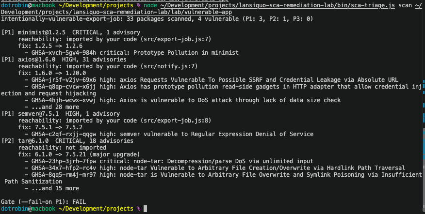

SCA Remediation Lab
I built a dependency security tool that ranks vulnerabilities by whether your code actually loads them, applies the smallest safe upgrade, and proves the fix with your own tests. It ships with an intentionally vulnerable lab app to demonstrate the full workflow.
Demo vs. the real tool
- Interactive demo
- Replays one recorded run of the tool on the lab app, in your browser. Nothing is installed or scanned.
- In development on GitHub
- The working tool, its tests and the intentionally vulnerable lab app. Runs locally with Node.js 20+.
In active development. The tool runs locally and in GitHub Actions; it isn’t a hosted service. The lab app and its data are invented and intentionally vulnerable.
Technologies & stack
The project is sca-triage, a command-line tool and reusable GitHub Action, plus an intentionally vulnerable lab app to test it on.
- Language & runtime: JavaScript ES modules, Node.js 20+ and npm. The tool uses only Node.js built-ins and has no third-party dependencies.
- Dependency analysis: GitHub Advisory Database data from the npm registry,
package-lock.jsonv2/v3 dependency graphs, import-level reachability and upgrade planning. - Lab dependencies: minimist, axios, semver and tar, pinned to vulnerable versions on purpose. They belong to the sample app, not the tool.
- Tests & automation: Node.js’s built-in test runner and GitHub Actions. CI runs unit tests on Node.js 20 and 22, plus a lab gate that must fail on the vulnerable baseline and pass after remediation.
- Evidence formats: JSON findings, Markdown reports, before-and-after test logs and lockfiles, and CycloneDX SBOMs.
- This website & browser demo: HTML, CSS, vanilla JavaScript and recorded JSON, hosted on GitHub Pages. The demo replays a recorded run; it doesn’t run Node.js or scan anything.
Source: CLI manifest · GitHub Action · CI workflow.
The problem
Dependency scanners like npm audit report every advisory with the same urgency, so teams drown in alerts and start ignoring them. Most of the real work in software composition analysis is deciding which findings matter: is the vulnerable package actually loaded by the application, and what is the smallest upgrade that fixes it without breaking anything?
sca-triage automates that triage. The lab app is a small evidence export job that passes option tokens from a less-trusted submitter to minimist. A crafted token reaches the parser and places a harmless marker on Function.prototype. This demonstrates reachable prototype pollution; it does not demonstrate remote code execution, an authorization bypass or data theft.
How it decides
For each vulnerable package, the tool combines the advisory severity with whether the application’s own code imports it:
- P1: high or critical, and the code loads the package, directly or through a dependency. Fix now.
- P2: high or critical but not loaded at runtime, or moderate and loaded. Schedule it.
- P3: everything else.
It then picks the smallest published version that no advisory covers, preferring the same major version, and flags major upgrades. In the lab, tar has the most severe advisories but ranks P2, because nothing in the app imports it:
| Package | Finding | Priority | Upgrade |
|---|---|---|---|
| minimist | 1.2.5 · critical, imported | P1 | 1.2.6 |
| axios | 1.6.0 · high, imported | P1 | 1.20.0 |
| semver | 7.5.1 · high, imported | P1 | 7.5.2 |
| tar | 6.1.0 · critical, not imported | P2 | 7.5.21 (major) |
The reviewed minimist advisory is CVE-2021-44906 / GHSA-xvch-5gv4-984h; 1.2.6 is the first patched 1.x version. The lab proves this one end to end with a security test rather than trusting the version number alone. The other three packages show detection, ranking and remediation, not a demonstrated exploit.
Scan, fix, rescan
I ran sca-triage against the intentionally vulnerable lab app, applied the proposed dependency upgrades, and scanned it again. These terminal captures show the full sequence.
-
Scan the vulnerable baseline
P1 gate: failThe first scan finds four vulnerable dependencies across 33 packages. The imported packages,
minimist,axiosandsemver, rank P1.tarranks P2 because the app does not import it.
The CLI reports the advisory, import location and proposed upgrade for each flagged package. View full size. -
Apply the dependency fixes
4 upgrades appliedThe
fix --applyrun installs the proposed versions:minimist 1.2.6,axios 1.20.0,semver 7.5.2andtar 7.5.21. The CLI reports thatnpm testpassed and saves the run evidence.
The tool reports zero vulnerable packages after applying the four upgrades. View full size. -
Rescan the updated app
P1 gate: passA separate scan of the updated lab app checks 37 packages and reports no known vulnerabilities in the installed versions. All priority counts are zero, and the P1 gate passes.

The rescan confirms the recorded result for this dependency inventory and advisory data at scan time. View full size.
Recorded verification
Recorded on 4 November 2026 on Linux with Node 22.23.4 and npm 10.9.9, by running sca-triage fix --apply on a copy of the lab app. These are saved results, not a live scan.
| Check | Before | After |
|---|---|---|
| Vulnerable packages | 4 (2 critical, 2 high) | 0 |
| Functional tests | 5/5 pass | 5/5 pass |
| Security test | Fails: marker pollution | Passes: no pollution |
| CI gate (P1) | Fails | Passes |
The functional tests pass on both versions, which is why compatibility tests alone miss this defect. The security test requires parsing not to modify Function.prototype; it fails before the upgrade and passes after. The tool writes this evidence automatically: a Markdown report, before-and-after findings, both lockfiles, both test logs and a CycloneDX SBOM.
Run it yourself
The tool is in active development on GitHub. With Node.js 20+:
git clone https://github.com/lansiquo/lansiquo-sca-remediation-lab.git
cd lansiquo-sca-remediation-lab
npm run lab:install
npm run lab:scanThe lab app is intentionally vulnerable: run it locally only, and apply fixes to a copy so it keeps its vulnerable starting point. The repository README covers fix --apply and using the GitHub Action on your own projects.
Scope and limits
Reachability is import-level: “imported” means the code loads the package, not that the vulnerable function is proven to run. The tool supports npm projects only. The application and data are invented; this is not an employer system or a production remediation.
Zero findings applies to this dependency inventory and the advisory database at capture time. It is not a security certification.